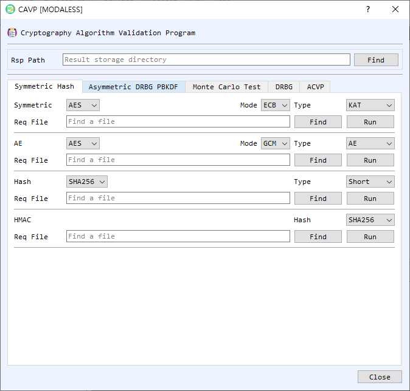

CAVP Dialog Guide
The CAVP dialog processes cryptographic algorithm test-vector request files and writes response files. It includes symmetric and asymmetric algorithms, hash and MAC tests, Monte Carlo tests, DRBG, PBKDF, and ACVP JSON utilities.

Figure 1. CAVP dialog on the Symmetric Hash tab. Select a request file, configure the matching algorithm and test type, and run the test to create a response file.
Shared Control: Rsp Path
Rsp Path is the directory where response files are written. Use Find to select a result folder. The dialog remembers this folder. For standard request-file runs, the output is named after the request file with an .rsp extension.
Symmetric Hash Tab
This tab contains separate request-file processors:
- Symmetric — Select a symmetric algorithm, mode (ECB, CBC, CTR, CFB, or OFB), and test type (KAT, MCT, or MMT). Use Find to select the request file and Run to process it.
- AE — Process authenticated-encryption vectors. Select AES or ARIA, GCM or CCM, and the test type (AE or AD), then choose the request file and run it.
- Hash — Select a hash algorithm and test type (Short, Long, or Monte), then process the request file.
- HMAC — Select the hash algorithm used by HMAC, then choose the request file and run it.
Asymmetric DRBG PBKDF Tab
- ECC — Select ECDSA or ECDH, a test type, curve parameter, and hash where applicable. Choose the request file and select Run.
- RSA — Select RSAES or RSA PSS, the test type and hash, and the request file. For deterministic RSA signature tests, use Find DET PrivateKey to supply the private key. E is the RSA public exponent input.
- DRBG — Process a DRBG request file using CIPHER, Hash, or HMAC method. Select the algorithm and configure Use PR and Use DF as required by the vector set.
- PBKDF — Select the hash algorithm and process its request file.
Each area has a Find button for the request file and a Run button to generate the response.
Monte Carlo Test Tab
- Symmetric MCT — Select algorithm, mode, direction (Encrypt or Decrypt), and count. Enter or inspect the starting Key, IV, PT, and CT, and the corresponding last values. Select Run to generate the Monte Carlo results; Clear resets the fields.
- Hash MCT — Select the hash algorithm and MCT version (standard or alternate). Enter the count, Seed, and any required First MD / Last MD values, then select Run. Clear resets the fields.
DRBG Tab
This tab runs a DRBG test from explicit inputs rather than a request file. Select the Method (CIPHER, Hash, or HMAC) and Algorithm, set Rand Len in bits, and choose Use DF and Use PR to match the desired test. Enter the available values as hexadecimal: EntropyInput, Nonce, PersonalString, reseed entropy/additional input, and generation AdditionalInput values. Select Run to display ReturnedBits; Clear resets the inputs and result.
ACVP Tab
- ACVP Request Response — Select a JSON request file with Find, then choose Run to generate the response JSON. SetTgId and SetTcId limit processing to the specified test group or test case ID. SkipLDT skips long-duration tests when supported. Clear clears the request path.
- ACVP Hash LDT — Enter the content (hexadecimal), hash algorithm, and Full Length Bits to hash a repeated content sequence. Run processes it in the foreground. Thread Run starts threaded processing and Thread Stop stops that work. Progress and current processed bit count appear in the status fields; MD displays the digest. Clear resets the LDT fields and progress.
Run a Request-File Test
- Set Rsp Path to the directory where results should be saved.
- Open the tab for the test family and select the algorithm, mode, test type, hash, curve, or other options required by the request vectors.
- Use Find to select the matching request file.
- Select Run. If the request filename does not appear to match the selected algorithm and test settings, the dialog asks you to confirm before continuing.
- Review the completion message and the generated
.rspfile in the result directory.
Notes
- Match the selected settings to the request file's algorithm and test type. A mismatch can produce invalid or incomplete response data.
- CAVP request-file processing and ACVP JSON processing use different tabs and file formats; choose the workflow matching your input.
- This tool computes responses to test vectors. Running vectors in BerEditor does not itself constitute formal NIST algorithm validation or certification.
- Protect private-key files used for deterministic RSA tests and keep generated response files with their corresponding request files.